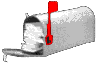

By day, Soren Ragsdale, 20, is a mild-mannered computer science student at the University of Arizona. But by night, the self-deputized Spam hunter girds his virtual pistol holster and patrols the Web in search of villainous abusers of the Internet, particularly, "spammers."
Exactly what is a spam? Hormel Foods jokes aside, a spam is a mass e-mailed or Usenet posted message usually mongering some kind of product or service. For instance, if you've ever received an unsolicited e-mail selling dubious legal services, long-distance calling plans, insipid T-shirts or atomic bomb blueprints of Fat Man & Little Boy, you've been spammed.
Most 'net users view spamming as a reprehensible marketing technique that clogs the life-giving arteries of the network. But despite the potential dangers this process poses to the Internet, spam outlaws continue their dirty deeds. Unfortunately, while federal law prohibits transmission of unsolicited faxes, no such rules exist for abusive spamming of the 'net. That's why Ragsdale, author of the "Who (or what) is Spam King" page http://com.primenet.com/spamking began his hunt a year ago.
His primary target?The infamous spammer Jeff Slaton, better known as Spam King. "The reason why I took on Jeff Slaton in particular was because when I would receive mail from him or see posts from him on a newsgroup, he wasn't even saying Îthis is a good idea.' He took it as Îna na na na, you can't catch me,'" says Ragsdale. "This was somebody just so obnoxious that I felt like I had to do something."
To unnerve Slaton, Ragsdale ferreted out information exposing the Spam King and posted a list at his site that includes Slaton's home phone number, home address, social security number, attorney's name and make of car with payments due. This tactic has worked insofar that Slaton has had to continually change his home phone number and e- mail address to avoid the deluge of messages from irate Internet users. But according to Slaton, Ragsdale's page is more of an endorsement than an epitaph for the Spam King.
"It really has worked in reverse because most people in the academic world, like Soren, haven't the slightest idea of marketing and they absolutely have no idea of the positive repercussions of his Web site in terms of economic renumerations to me for my services," says Slaton. "I don't care if they continue to have their Web sites up there. It simply perpetuates the Spam King legend."
Not all spammers are as brazen as Slaton, however, and some even come crawling before Spamhunters on their hands and knees, looking for forgiveness. For example, a spamming offender listed on Alex Boldt's Blacklist of Internet Advertisers at http://www.cco.caltech.edu/~cbrown/BL/ posted in regret, "Am currently blacklisted from rec.games. video.arcade.collecting for advertising... Realize that it was inappropriate [sic] and have learned my lesson. Have served my time and am [sic] no longer a menace to society. Would like to be considered for parole. Will not jump bail."
As a general rule, Boldt, in the role of judge, jury and executioner, sentences spamming offenders to a minimum of three months time on the blacklist. Only after doing some hard time can ex-spammers hope to apply for a probation and have their name removed from the virtual Sing Sing -- although the site's archive will always keep past offenders and their netiquette "crimes" posted for educational purposes. Understandably, spammers are none too pleased with Boldt's tactical warfare techniques, and from time to time, he receives some rather angry responses from direct marketers who have been given a good ol' Spamhunter branding. In spite of threats to sue or do bodily harm to him, Boldt remains stoically cool. "The flames I get after having put someone on the list are rather predictable... Once they figure out that I'm German, the Nazi/Hitler analogy becomes very popular... If you have seen five, you've seen them all." But even those not involved in spamming are unhappy with Boldt's blacklist and accuse him of using tactics that are unfair and in direct opposition to the spirit of the 'net. Boldt makes the claim however, that his approach to spamming is completely in accord with the elan vital of the Internet and argues, "Punishing of unwelcome behavior should be done by private individuals, following the same grass roots philosophy that governs the rest of the 'net."
In keeping with that philosophy, Boldt, on his site, describes a number of guerilla tactics that have been proven to work against the more soft-minded of spam artists. Some retributive measures he recommends: 1) Send e-mails to spammers who use automatic mail-back robots. Place their own address (or better yet, the address of another spammer who's also using an automatic mail-back robot), in the FROM or REPLY-TO header. This causes a furious mirror-in- front-of-a-mirror response that effectively crushes the target's mail server. 2) Waste a spammer's time by feigning interest or through use of an AI engine like "emacs doctor" that engages them in fake mail dialogue. 3) For the truly emphatic, send the spammer a notice explaining that a charge of $500 will be incurred for the proofreading of every commercial spam you receive from them. The next time you're e-mailed by the spammer, send out an invoice. Unless they pay the fee, take them to small claims court.
While Ragsdale recommends Boldt's reprisal tactics for impairing the actions of spammers, he also urges that service providers write a "damages provision" into subscription contracts so that abusive users are held pecuniarily liable for the costs of cleaning up their own piles of spam. Simply terminating the accounts of abusers is not enough anymore, says Ragsdale, because services like Inter-Ramp, a PSINet company, permits any spammer with a credit card to set up a free trial account and start all over again.
In fact, it's through InterRamp that Ragsdale suspects Slaton has set up a number of new accounts from which he has been e-mailing forged spams -- each of which lists Ragsdale as the REPLY-TO. "I was coming back from going to a 7-11 to get a Thirstbuster. Luckily I was logged on at the time, and saw about 20 messages, mostly from Italian listservs saying, ÎThank you, your response has been posted,' or ÎI'm sorry, your response was not accepted,'" recalls Ragsdale. Realizing he had been framed, Ragsdale immediately set up a remailer to automatically respond to the flood of angry e-mails that would soon follow.
There's no proof that Slaton actually sent the spam, but Ragsdale claims that the writing style is the same, "down to the bad grammar and misspelled words." Additionally, the spam was traced back to a service provider that has a dial-in number located in Albuquerque, N.M. Currently, the University of Arizona legal department is investigating the matter.
"It's a silly accusation," laughs Slaton. "Albuquerque is kind of like a southwest Silicon Valley. We have a lot of people who use the Internet -- And there's a lot of activity that is done in my name on the Internet. It's disappointing to hear that, but not surprising." Although Slaton pleads "not guilty" to the accusation of spam forgery, Ragsdale remains suspicious and manifests that there's much more than a competitive rivalry at work here. In his estimation, Slaton is an unscrupulous businessman who'll do anything for a buck.
 "He obviously doesn't care who he misleads so long as he gets paid," attests Ragsdale. "He even got a church to give him $450. And they listed their phone number, a toll-free number you can call --they got mail bombed; they got their account pulled. This is a church group that's doing charity work!"
In defense of himself, Slaton insists that it was the president and founder of the church, Calvin Horn of Noon Day Ministries in Albuquerque, who in fact initiated the contact between the two parties. "He was intrigued by the idea of reaching millions of people on the Internet. And in spite of the fact that the articles [shown to him] were very controversial, to say the least, they sought out my services." Slaton also says that he suggested to members of the church's board that, prior to the spamming, they should set up some kind of answering machine service to field all calls.
That's not the whole truth according to Pastor Dennis Lihte of Noon Day, who sat in on discussions between the church and Slaton. He admits that the ministry did indeed seek out Slaton's services, but he also says that the congregation wasn't sufficiently warned about the potential for damaging their organization's reputation, nor to the amount of contemptible feedback that would be received subsequent to the mass mailing.
Who's to blame? It's impossible to say, but one thing's for sure, spamming doesn't pay -- for the $450 spent on Slaton's service, the church collected no more than $20 before having to pull the plug. Even Slaton concedes that spamming is on the decline and says that he's hanging up the spurs and moving on to greener pastures. "The novelty has worn thin -- I've decided to let the little dogs fight over the small bits of scrap spam available."
As for Ragsdale and Boldt, they say they won't ease off anytime soon. Despite all the flames and beatings they're administered daily on related newsgroups, they both remain focused on their ultimate goal: No more spam.